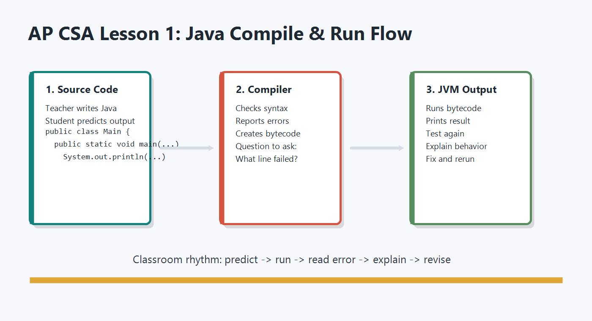

考試時間
Section I 與 Section II 各 1 小時 30 分鐘。
Official AP CSA Exam Guide
這一頁把 College Board / AP Central 官方文件整理成學生真正會用到的版本： 考試形式、考場規範、配分邏輯、MCQ 節奏、FRQ 題型與 rubric 拿分策略。
官方文件核對日期：2026-08-22。考試日期、Bluebook 規則與考場安排仍以 College Board、 AP Central 與學校 AP coordinator 最新通知為準。

Section I 與 Section II 各 1 小時 30 分鐘。
42 題，佔總分 55%。答錯與空白不倒扣。
4 題，佔總分 45%。全部在 Bluebook 中作答。
AP Computer Science A 不允許使用計算機，除非有核准的 accommodation。
Exam Snapshot
2027 AP CSA Exam：2027 年 5 月 12 日，Session 2。
實際地點與報到時間由學校 AP coordinator 通知。
Fully digital exam。MCQ 與 FRQ 都在 Bluebook testing app 中完成並提交。
考前要確認 Bluebook 已安裝、可登入、裝置電量足夠。
Multiple Choice：42 題，1 小時 30 分鐘，佔總分 55%。
平均每題約 2 分 8 秒。看懂程式比背語法更重要。
Free Response：4 題，1 小時 30 分鐘，佔總分 45%。
四題各有固定主題：methods、class design、ArrayList、2D array。
Java Quick Reference 會在 Bluebook 中提供，學校也可以在考場印給學生。
平常練習就要熟悉表上可用的 String、Math、array、ArrayList 方法。
MCQ 由電腦計分，FRQ 由 AP Readers 依 scoring guidelines 評分，再合成 1-5 分。
AP 分數不是固定比例排名。不要用坊間「猜切分」取代紮實練題。
Course Framework
AP CSA 的官方課程架構在 2025-26 學年更新為四個大單元。以下比重是 Multiple-Choice Section 的 approximate weighting，實際題目仍會依 learning objectives 與 skills 出題。
物件、method calls、String、Math、API 閱讀與基本程式推理。
Boolean、if/else、loops、nested loops、algorithm tracing。
class、fields、constructors、methods、encapsulation、state。
arrays、ArrayList、2D arrays、data traversal、searching/sorting 相關演算法。
| Practice | 意思 | MCQ 比重 |
|---|---|---|
| Design Code | 選擇合適的程式設計與演算法。 | 2%-10% |
| Develop Code | 撰寫並實作程式碼。 | 22%-38% |
| Analyze Code | 判斷輸出、結果，或解釋程式為何不如預期。 | 37%-53% |
| Document Code and Computing Systems | 描述造成特定結果的程式行為與條件。 | 10%-15% |
| Use Computers Responsibly | 理解電腦使用的倫理與社會影響。 | 2%-10% |
Exam Rules
AP 考試當天，學生需要同意 College Board 的 test security 與 administration policies。 沒有遵守規範可能導致分數被取消；刻意作弊或分享安全題目可能導致未來考試資格受限。
Section I
MCQ 會要求你判斷程式輸出、變數值、錯誤、等價程式片段、條件行為與必要 code segment。 它不是單純背 API，而是考你是否能在有限時間內準確 trace 程式。
先看它是在考 output、錯誤、method call、object alias、loop bounds、String、array 還是 ArrayList。分類後才知道該畫 trace table 還是檢查語法。
遇到 loop、nested loop、array 或 object mutation，不要只在腦中想。把 index、condition、更新後的值寫在 scratch paper 上。
常見陷阱包含 integer division、== vs .equals()、String index、off-by-one、ArrayList remove 後 index shift、reference aliasing。
官方說明指出 MCQ 分數看答對題數，答錯或空白不倒扣。剩下時間不足時，先排除再作答，不要留下空題。
Section II
官方 AP CSA Exam 頁面列出 4 題 FRQ 的固定方向，且全部評量 Develop Code。 你的目標不是寫出最漂亮的 Java，而是在時間內交出符合 method/class specification 的可評分答案。
通常要求寫 2 個 methods，或 1 個 constructor 加 1 個 method。重點是 conditional、iteration、method calls 與 String methods。
substring 結束位置、indexOf 找不到回傳 -1、以及 .equals()。要求你根據 scenario 與規格表設計 class。通常需要 class header、private instance variables、constructor 與 method。
給定 scenario 與相關 class，要求你在 ArrayList 中取得、分析、更新或篩選資料。
size()、get(i)、set(i, value)、add、remove，不要把 ArrayList 當 array 用。list.get(i).getCost()。要求你建立、走訪、分析或操作 2D array。核心是 row/column 的 nested loop 與邊界條件。
arr.length 是 row 數；arr[0].length 是 column 數。這類分數看的是必要步驟是否齊全、順序是否合理、整體演算法是否達成規格。若漏掉核心步驟、把步驟組錯、加入會破壞結果的額外程式碼，通常很難拿到。
這類分數範圍比較窄。就算其他地方錯，只要某個指定元素正確，例如正確宣告 class header、正確呼叫指定 method，仍可能拿到該點。
官方範例 scoring guidelines 說明，有些小錯可能不影響該點，例如可明確推斷的拼字大小寫、少分號但結構清楚、局部變數宣告瑕疵等。不要因此放棄寫完整邏輯。
FRQ 的分數是拆開給的。卡住時先寫出你確定的 header、初始化、loop skeleton、條件判斷、方法呼叫與 return，讓 reader 有可給分的結構。
Java Quick Reference
Java Quick Reference 列出 AP CSA 考試可能使用的 Java library 方法。它不是課本，也不是完整 Java 文件； 它是考試中可以查的 reference table。真正的能力是看到方法名稱後，能正確判斷回傳值、index 範圍與 side effect。
length、substring、indexOf、equals、compareTo 是 MCQ 與 FRQ Q1 高頻核心。
abs、pow、sqrt、random 要知道回傳型別與常見 casting 寫法。
size、add、get、set、remove 要熟到不用查也知道 index 怎麼變。
array 使用 length 欄位，不是 length()；2D array 要分清楚 row 與 column。
Final Prep
Official Sources
以下連結建議考前再開一次確認，因為 AP Exam policies 與 Bluebook 規則可能每年更新。